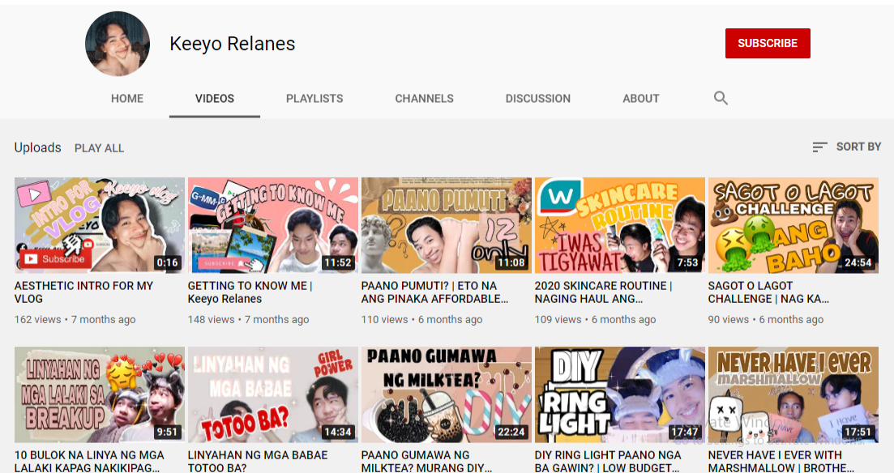

One of my hobbies is watching movies from Netflix and some
series from different countries
like Korea, Thailand, china, and japan.
I love to watch when I have a lot of time,
especially when I don't have school works.

I like creating videos I love vlogging, but now
I stop vlogging because of the online classes it's
hard to edit the videos when you are busy about the school works,
but when vacation came again, I would like continue vlogging
again. Am using my skill in vlogging through editing
some videos to present for academic purposes.